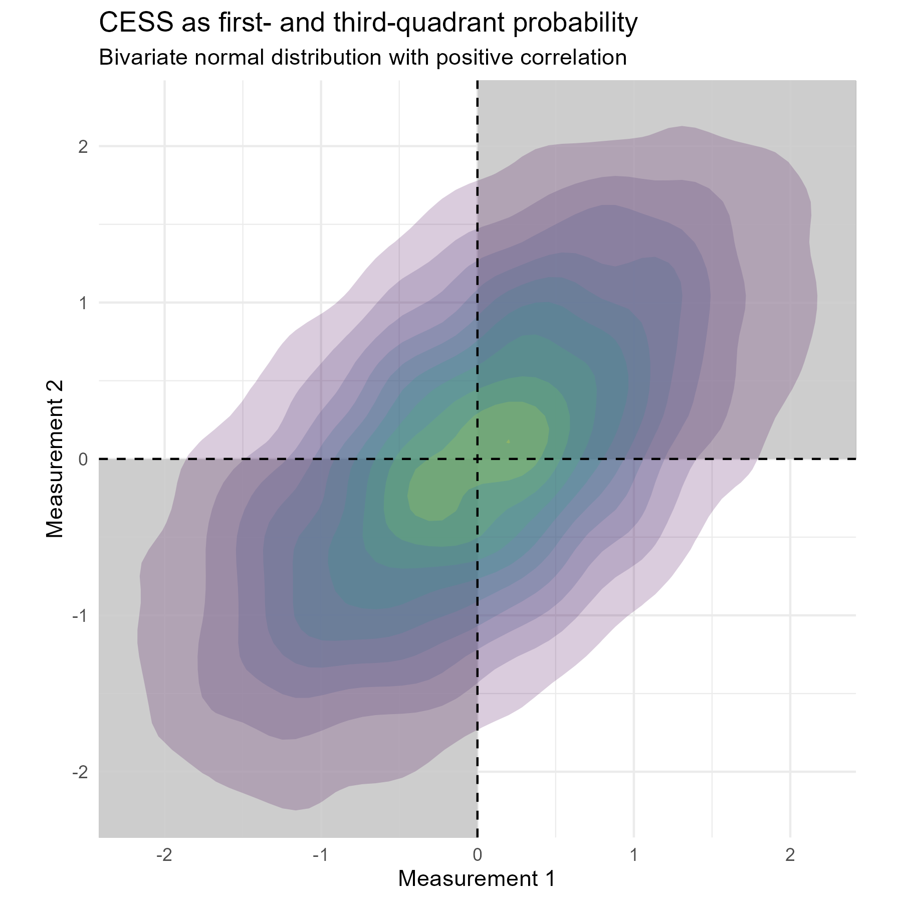

The chance of erring on the same side (CESS): A way to elicit correlation
Useful for power analysis with repeated measurements
Collaborators always come to me for help with power analysis. More often than not, their studies involve repeated measurements—multiple observations per subject over time or under different conditions. And inevitably, the power of their study depends on a crucial, yet elusive, parameter: the correlation between repeated measurements.
This is where things get frustrating. When I ask, “What do you think the correlation between measurements should be?” I usually get blank stares or vague responses like “Umm, maybe like 0.5?” or “I have no idea, what do you think?”—which, of course, is the whole reason they’re asking me for help in the first place.
But what if there were a better way? Instead of asking investigators to pluck a correlation coefficient out of thin air, we could ask them a question they can actually answer.
Introducing the CESS
The Chance of Erring on the Same Side (CESS) is a simple yet intuitive measure: it’s the probability that two repeated measurements for the same subject fall on the same side of their respective means. In other words, if you measure a subject twice, what’s the chance that both measurements are above (or both below) their respective averages?
Most investigators can make a reasonable guess for this: “About 70% of the time, I expect that if the first measurement is above average, the second one will be too.” That’s an answer we can work with!
Converting CESS to correlation
Graphically, CESS represents the probability mass in the first and third quadrants of a bivariate coordinate system. If the two measurements are positively correlated, this probability mass will be greater than 0.5 (see figure below). The stronger the correlation, the greater the mass.

A precise formula exists for a bivariate normal distribution with correlation \(\rho\):
\[ \text{CESS} = \frac{1}{2} + \frac{\arcsin(\rho)}{\pi}. \]
To solve for \(\rho\):
\[ \rho = \sin\left( \pi \cdot \text{CESS} - \frac{\pi}{2} \right). \]
This formula can be found in, e.g., Mardia, Kent, and Taylor (2024). It gives us a direct way to translate an intuitive probability estimate into the correlation parameter needed for power analysis.
Example: from investigator input to power calculation
Let’s say an investigator tells us:
“I think there’s about a 75% chance that two measurements from the same subject will be on the same side of their means.”
Then, plugging into the formula:
cess <- 0.75
rho <- sin(pi * cess - pi / 2)
rhoThis returns:
[1] 0.707So, instead of awkwardly guessing, we now have a data-informed estimate: \((\rho \approx 0.707)\). This can be used directly in power calculations for mixed models, repeated measures ANOVA, or longitudinal analyses.
Conclusion
Next time someone asks for a power analysis but has no idea about their correlation structure, try the CESS approach. It replaces guesswork with an intuitive probability that investigators can actually reason about.